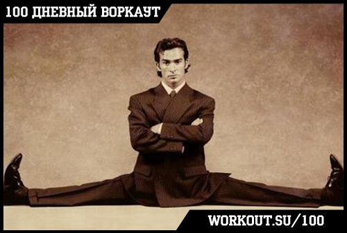
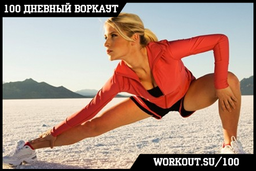

100 Дневный воркаут
<==== Вернуться к оглавлению
День 7. Упражнения на растяжку и гибкость
Каждый последний день тренировочной недели мы будем посвящать растяжке. Зачем это нужно делать, и почему растяжка и гибкость очень важны для вашего здоровья вы узнаете из сегодняшнего инфо-поста.
Круги сегодня НЕ ДЕЛАЕМ!!!
Сегодняшний пост мы хотели бы посвятить такому важному показателю как гибкость, но долго не могли решить в каком ключе подать вам информацию. С одной стороны нужно, чтобы она была ясной и понятной, а с другой стороны, чтобы не ограничивала вас в каких-то узких рамках и подходила конкретно для своей ситуации, целей и задач. После некоторых раздумий, мы решили осветить гибкость в контексте здорового тела. Начнем!
Физические нагрузки, адекватные и разносторонние позволяют решить многие возникшие проблемы вашего опорно-двигательного аппарата. Но мышечная сила является одной стороной вопроса. Не менее важна и работа над гибкостью ваших суставов. Оговоримся сразу, что тема гибкости довольно обширно изучается учеными, т.к. чрезвычайно важна в спорте. Кому интересно разобраться в теме подробней, рекомендую ознакомиться с книгой «Наука о гибкости» Майкла Дж. Алтера. В рамках 100-дневки мы лишь поверхностно коснемся этой темы.
Общеизвестно, что в детском возрасте практически все мы здоровы (речь не идет о возможности различных врожденных патологий). У нас функционируют все мышцы, крепкие кости, здоровое сердце, мы чрезвычайно гибки, легкие не отравлены сигаретами, а печень – алкоголем и легкими наркотиками. Но в течение жизни, с возрастом, благодаря многолетнему хроническому воздействию тех или иных факторов внешней среды, организм наш начинает изменяться (в 99% случаев не в лучшую сторону). Много чего происходит с нами плохого, но я конкретно хотел бы остановиться на наших суставах. Как пример, скелетная и мышечная система типичного офисного сотрудника приобретают характерные черты – появляется сутулость, выпячивается живот, голова подается вперед, задница становится дряблой. Благодаря чему мы получаем весь этот «бонус» к соцпакету? Благодаря тому, что наше тело, мышцы и суставы длительное время «тренируются» в однобоких, в корне неверных тренировках. И это видоизменяет наши суставы.
ogrudko
Сустав (упрощенно, да простят меня медики, за вольное обращение со словами здесь и ниже по тексту) – это подвижное соединение 2 или нескольких костей, которые приводятся в движение, крепящимся к ним соответствующим мышцам. Кости в суставе могут двигаться в одной плоскости (как скажем локтевой сустав) и при этом приводятся в движение парой мышц-антагонистов – бицепсом и трицепсом. А могут двигаться во всех плоскостях, приводясь в движение целой группой мышц, например плечевой сустав, за вращение которого отвечают грудные мышцы, дельтовидные мышцы, трапецевидные мышцы, мышцы вращательной манжеты и т.д. С возрастом наши суставы, так или иначе, «деформируются» под воздействием многолетних факторов.
Процессы, связанные с иммобилизацией, уменьшением качества и количества движений в суставе всегда приводят к одному и тому же: снижение эластичности мягких тканей, ухудшение питания сустава (в хрящевой ткани отсутствуют кровеносные сосуды, поэтому питание происходит за счет кровоснабжения окружающих мышц), ухудшение передачи нервных импульсов и как следствие всего этого - снижение подвижности в суставе и уменьшение силы мышц.
Возьмем плечи: постоянная работа за компьютером держит наш плечевой сустав в таком положении, что мышцы, вращающие плечо внутрь-вперед, все время сокращены и находятся в напряжении, а, мышцы вращающие плечо назад, растянуты. Если человек находится в таком состоянии годами на работе и не выполняет никаких физических нагрузок, которые заставят плечевой сустав работать в обратном направлении, то он и получит эту самую сутулость, которая появляется из-за дисбаланса в работе приводящих и отводящих мышц плеча. Если переводить проблему в сторону гибкости, то это значит, что мы снизили подвижность в плечевых суставах и нарушили баланс между мышцами-антагонистами. Решением будет растяжка (стречинг) грудных мышц и выполнение тяговых горизонтальных упражнений (например австралийские подтягивания).
Второй наглядный пример – поясница, живот и бедра. От сидячего образа жизни с нашим телом происходит следующее: Постоянно сокращенный (но не напряженный) бицепс бедра (мышца задней поверхности бедра) со временем укорачивается. При этом мышцы низа спины наоборот расслабляются и из-за того, что обычно мы не держим спину ровно во время сидения, и со временем мышцы становятся слабыми и растянутыми, что приводит впоследствии к болям в пояснице т.к. любая более или менее существенная нагрузка становится для них запредельной. Решением проблемы в данном случае будет растяжка (стретчинг) бицепса бедра и укрепление мышц кора (например, выполняя различные виды планки).
С одной стороны гибкость - это свойство нашего тела, знакомое каждому с детства, а с другой стороны – очень сложный и комплексный показатель состояния наших мышц и суставов. Простой - потому, что даже дети этой самой гибкостью владеют в той или иной степени. При чем дети владеют ей настолько, что взрослым об этом зачастую остается только мечтать. Сложный – потому что трудно дать объективные критерии того, насколько гибкий человек. Умеренная подвижность во всех суставах или определенная «одаренность» например в «шпагате», в чем измерять гибкость? В сантиметрах, градусах?
Что такое гибкость человека?

Гибкость – это способность окружающих сустав мягких тканей к растяжению, что обеспечивает определенную амплитуду движения в суставе. Может рассматриваться как общая (в целом у конкретного человека), так и и в конкретном суставе (что является более правильным), т.к. быть гибким в общем вряд ли кому-нибудь нужно кроме художественных гимнастов и цирковых актеров. Чаще речь идет о гибкости определенных суставах.
Близкое к гибкости определение подвижность (сустава) – максимальная амплитуда движения в суставе. Может быть активная (когда движение в суставе осуществляется за счет произвольного сокращения соответствующих мышц) и пассивная (когда прикладывается внешняя сила – с помощью других своих мышц, партнера, гравитации, инерции).
Хотя мы и говорим о суставе, но когда подразумеваем, что нам нужно улучшить нашу гибкость или «растянуться», то имеем ввиду работу опять таки с нашими любимыми мышцами. Именно мышцы, отвечающие за сгибание и разгибание в отдельных суставах, не дают вам сесть на шпагат, сложиться как перочинный ножик, ну или о чем вы там мечтаете. Чтобы увеличить свою гибкость, нужно тянуться или как сейчас модно говорить - заниматься стретчингом. Причем, что интересно, наши мышцы уже способны растягиваться очень и очень сильно (удлиняться где-то на 60%). А не дает им это делать нервная система, которая в определенный момент как бы говорит «Дальше не расслабляться! Осторожно! Можно получить травму!». Растяжка подразумевает тренировку для нервной системы в подаче, а вернее гашении нервных импульсов, ответственных за сокращений целевых мышц, вследствие чего они могут расслабляться (и удлиняться) все больше и больше. Таким образом, силовые тренировки учат наши мышцы эффективно сокращаться, а растяжка учит наши мышцы эффективно расслабляться. Комбинирование этих двух составляющих в своих тренировках является ключом к здоровому телу.
Польза от тренировок на увеличение гибкости

[1] Увеличение амплитуды движения в суставах
На самом деле многие люди элементарно не могут глубоко присесть (чтобы бедра опустились ниже параллели полу, не отрывая пяток), потому что имеют недостаточно гибкий голеностоп и тазобедренные суставы. А урезанная амплитуда выполнения упражнения, в свою очередь, снижает его эффективность.
[2] Улучшение атлетических показателей
В целом с улучшением гибкости улучшаются и атлетические показатели, однако неправильно и не вовремя проведенная растяжка может снижать результаты из-за расслабляющего эффекта.
[3] Повышение уровня физической подготовки
На определенном, очень высоком этапе, для того чтобы по максимуму развить какое-либо физическое качество, спортсмены нередко бывают вынуждены жертвовать другими. Однако на начальном этапе все с точностью до наоборот – развивая какое-либо одно физическое качество, вы будете способствовать развитию и всех остальных. В нашем случае работа над гибкостью улучшит силовые показатели за счет тренировки ЦНС, которая будет подавать более точные сигналы мышцам, а значит сможет эффективней использовать их потенциал.
[4] Снижение стресса и напряжения
Простой пример. От сидячего образа жизни с нашим телом происходит следующее. Постоянно сокращенный (но не напряженный) бицепс бедра (мышца задней поверхности бедра) со временем укорачивается. При этом мышцы низа спины наоборот расслабляются из-за того, что обычно мы не держим спину ровно во время сидения, и, со временем, становятся дряблыми. Это становится одной из причин появления боли в пояснице при нагрузке, потому что она становится для них чрезмерной! Решением проблемы в данном случае будет растяжка бицепса бедра и укрепление мышц кора (например выполняя различные виды планки).
Растяжка подразумевает не растягивание мышц как таковое, а именно их подконтрольное расслабление.
[5] Коррекция осанки
Постоянное сидение перед экраном монитора и работа с клавиатурой/мышкой держит наш плечевой сустав в таком положении, что мышцы, вращающие плечо внутрь-вперед, все время сокращены и находятся в напряжении, а, мышцы вращающие плечо назад, растянуты. Если человек находится в таком состоянии годами на работе и не выполняет никаких физических нагрузок, которые заставят плечевой сустав работать в обратном направлении, то он и получит эту самую сутулость, которая появляется из-за дисбаланса в работе приводящих и отводящих мышц плеча. Если переводить проблему в сторону гибкости, то это значит, что мы потеряли гибкость в плечах и нарушили баланс между мышцами-антагонистами. Решением будет стретчинг грудных мышц и выполнение тяговых горизонтальных упражнений (например австралийские подтягивания). Работайте над гибкостью плечевых суставов и помолодеете на несколько лет.
[6] Снижение рисков получения травм
Т.к. стретчинг способен снять перенапряжение с мышц, в них будет меньше накапливаться хроническая усталость, что увеличит период тренировок без травм. * Растяжка позволяет ускорить кровообращение, которое повышает мышечную эластичность и придает вам больше выносливости и сил.
[7] Ускорение процесса восстановления после тренировки
Крепатура это проявление микротравм в мышцах и накопление в них метаболических токсинов после тренировки. Стретчинг позволяет расслалить мышцы, а значит улучшить кровоток и быстрее вывести эти самые токсины из мышц.
[8] Улучшение качества жизни
Тут все просто – приятно уметь завязывать шнурки, стоя и в 10 лет, и в 40, и в 80. А если вспомните, какие проблемы с гибкостью и амплитудой движения бывают у пожилых людей, то согласитесь, стретчинг – это серьезно!
Гибкость – всегда ли она хороша?
Если такой вопрос задается, то мы сразу начинаем искать подвохи, и они действительно есть. Подвижность сустава всегда идет в паре с его стабильностью, это две противопоставленные характеристики. Стоит ли гибкость развивать чрезмерно? Нужно ли обычному офисному работнику уметь садиться на шпагат, вставать на мостик, касаться лбом коленей? Скорее всего, нет. Нужно ли увеличивать подвижность тазобедренных, плечевых, голеностопных суставов? Скорее всего, да. Как вы догадываетесь, все зависит от образа жизни, возраста, особенностей профессии и досуга. Да, гибкость может быть чрезмерной, в том числе приводить к определенным медицинским проблемам и дискомфорту. Нет особого смысла наращивать гибкость чрезмерно без адекватной тренировки соответствующих мышц, способных управлять все увеличивающейся амплитудой движения. Такая ситуация может привести к такой проблеме как вывихи и растяжения.
Как узнать - достаточно ли вы гибкй Существуют определенные тесты на гибкость тех или иных суставов, выполнив которые вы можете выяснить, над подвижностью каких суставов вам нужно поработать. И на закуски несколько видео о том, каким может быть стретчинг.
Надеюсь сегодняшний пост дал достаточно необходимой информации ;)
======> День 8. Баланс калорий (сколько нужно калорий в день?)